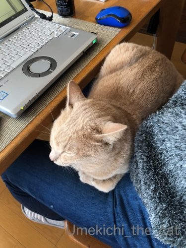
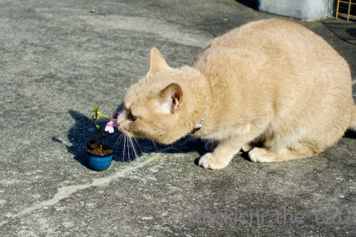
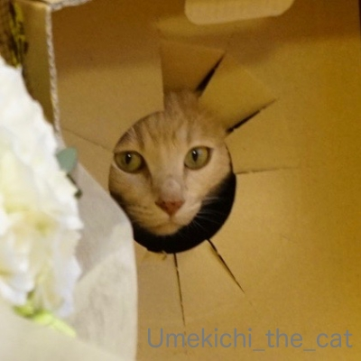
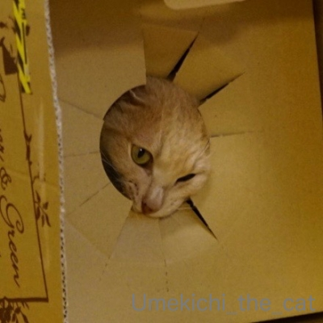

わしのおしごと [梅吉]

わし ここんとこ まいにちいそがしいんやで


しつれいやな ほんまに
梅吉、毎日おとーさんのテレワークのお手伝いに励んでます(⌒-⌒;
お昼ご飯が大変かな？と思いましたが前の日の残り物が確実になくなるのが良い！（爆
私一人だと２〜３日食べ続けたものが１日でなくなる。
ワイシャツの洗濯＆アイロンがけをしなくて良いなど楽チンなことも多々。

おっとの休憩時間にはベランダに連れ立って出かけたり（笑

かくれんぼからのー

追いかけっことなかなか楽しそうないっぴきとひとりの愉快な仲間たち、ですwww
で、テレワークなんですが
会社の目的としては
「大規模な感染拡大を防ぐため社員の行動をできるだけ制限し社会の混乱の抑制に協力する。
かつ、大多数の社員がテレワークすることでの問題点を明らかにする。
期間中の業績不振は問題とせず。」
なはずなんですが・・・
半数以上の社員が平時と同じ様に出社しちゃってるんですって。
その理由は会社に行かなければ出来ない仕事がある、だけではないらしい。
「こんなときでも出社してがんばっている」アピール？
「出社している人が多いから自分も行った方が良い」と横並び的な考え？
今の日本の社会だとこうなってしまうのかしら。
会社がのぞましいとか推奨しますと言ってもダメみたいだ
決まりだと言わないと通じないんだな・・・とつぶやくおっとでしたw
＊＊＊＊＊＊＊＊＊＊＊＊＊＊＊＊＊＊＊＊＊＊＊＊＊＊＊＊＊＊＊＊＊＊＊＊＊
前記事、
沢山の「結婚記念日おめでとう」のコメントをありがとうございましたm(_ _)m
感謝を込めて（？）追加画像( ´艸｀)

この穴、顔を出すために作られたとしか思えませんw

楽しいと凶悪顔になる漢、梅吉 (≧▽≦)
タグ：テレワーク

カフェオレ色の梅吉

梅吉 2023年8月10日 永眠


梅吉と出会った譲渡会

犬猫の理由なき殺処分ゼロ
妄想広告
UMEKICHI 光

爆発的に早い！
時々攻撃的！
Thanks to Mr.Boss365
爆発的に早い！
時々攻撃的！
Thanks to Mr.Boss365

はい。この穴猫の為のサービスなんです。
梅吉さんのお手伝いで、おっと様お仕事はかどりますかね。仲良しご家族で問題なしみたいですね。
ここだけのハナシ私は亭主元気で留守がいいんだけどー。
by zombiekong (2020-03-12 00:32)
再び会社へ行くようになった時の
梅吉さんの落胆する様子が・・・＾＾；
by ぽちの輔 (2020-03-12 06:26)
出社してる方々、ニャンコと暮らせばきっと速攻テレワークにw
きっとあまり家に居たくないのと、他の人が出社してて
自分が出社してないのは・・・って不安になっちゃった人たちなんですねぇ(*_*)
お父さんがテレワークになって一番喜んでるのは梅吉さんかも=(^.^)=
大好きなお父さんとお母さんがほぼ一日中一緒にいてくれるんですもんねぇ*\(^o^)/*
by ニッキー (2020-03-12 07:15)
梅吉さん、夫さんと遊べてうれしいね^^
by ニコニコファイト (2020-03-12 07:16)
楽しいと狂暴顔ｗｗわかりますー( *´艸｀)
黒猫は特にこっわい顔になりますよ。犬は
楽しい時に真底楽しそうな顔になるのと対照的。
by mio (2020-03-12 07:46)
梅吉さん♪ 毎日監督お疲れ様です（笑
梅吉さんのおかげでお仕事もはかどる？？
ストレス解消にはなりますね(#^.^#)
by きぃ (2020-03-12 09:23)
今回の騒動でテレワークが注目を集めてますが、
これが広く定着すると、オフィスにある家具が
いらんやん！ということになり、
売り上げが減って困る我が社です(^_^;)
by よーちゃん (2020-03-12 09:32)
テレワークのお手伝いで太ももに乗られちゃうと仕事が出来ないですね(笑)
箱に入るのはニャンコ大好きですね(^^)
by ma2ma2 (2020-03-12 10:25)
半数以上が出社してしまう・・・アピールか。
何だろう、日本人の国民性なんでしょうね。横並び。
せっかくの機会なので感染拡大防止に私も便乗しちゃってます。
昨日はマジで「新型コロナ相談ダイヤル」に電話しました。
もしも感染していたら！をいろいろ考えているうちに怖くなりました。
もしも入院になったら！とか報道されちゃうよ！とかね。
その出社している方達はそういう恐怖感より「まじめな自分アピール」の方が勝ってしまっているのでしょうね。
梅吉さん、テレワークのお手伝いご苦労様。
あつらえたような穴からの顔出し♪ひまわりみたいで実によろしゅうございます。
by marimo (2020-03-12 10:49)
梅吉さん、テレワークのお手伝いに余念がありませんね。
そりゃもう捗るでしょう(笑)
その穴は、絶対、ニャンコのための穴に決まってます(キッパリ)
えーーー?! 半数以上が出勤しちゃってるの？なんだかなぁ。
会社側がそこまで考えているのに、出勤している方がダメじゃね？な気がするんですけどねぇ。出勤する場合を届け出制にしないとダメかな。
社外に情報を持ち出す危険性もあるので、在宅勤務、テレワークには、確かに問題も多くて、それがメンドクサイから出社する、というのもありますね。例えば、前職では、パソコンの持ち出しが制限されていたし、自宅のパソコンを社内LANに接続するのは禁止だったし、そうなると、超使い勝手が悪い持ち出し専用PCの利用申請して、あれこれ山のような手続きをして、重い思いをして持って帰り、てな感じ。パートナーのところはそこまでは厳しくないけど、それでも毎度毎度パソコンを持ち帰るのが面倒で、おいそれと在宅できない、とボヤいていました。
by ChatBleu (2020-03-12 11:45)
梅吉さんも毎日忙しいのね～っ(≧▽≦)
定期的に会議にも参加しているのかしら？！
おとーさんの膝にジャストサイズですね！
わが相方も「交代でテレワーク」らしく週に2～3日家で仕事しています。
こてつはオヤツもらえて喜んでるみたいです^^
セキュリティを考えると確かに環境整備と個人の意識改革も必要。
今回のケースで問題点を洗い出して、どんどん増えればいいなと思います。
まじめアピール、無駄に職場に長く居たがる人、電車止まった時などにものすごい無理して時間かけて出勤してスグ帰る人、います^^;
やっぱりお花のダンボール最強やわ～♪
by ゆきち (2020-03-12 12:50)
こんにちは。だいぶ出遅れました。
梅吉君、テレワークの監督？のお仕事が充実していますね（笑）
いい感じで収まってます（笑）長時間の膝上は拷問？になりそうです（爆）
食事もリデュースに貢献！！エコなテレワークになっています。
テレワーク、良い面悪い面ありますが、社会的実験として良い方向に進む予感あり。
出社しないと出来ない事ありますが、IT駆使すれば可能と推測。
会社に出社する人、自宅に居場所がない可能性あります。
また、テレワーク出来る職種の人は、限られていますね。
「現場仕事のある人」は、会社にタイムレコーダー？報告のみで直帰しています。
お花段ボール？梅吉君、楽しそう！！色味も馴染み？一体化ですね（爆）
梅吉君には楽しいテレワーク！！
コロナ問題が解決したら寂しがりそう！？(=^･ｪ･^=)
by Boss365 (2020-03-12 13:56)
梅吉さんの追加画像、
お花の段ボールは梅吉さんのためのプレゼント！
『横並び的な考え？』日本人らしいですね。
我が夫は家にいるのが大好きなので、
出勤しなくて良いとなると大喜びです。
昔は（夏の期間など）会議がある水曜日だけ
出かけていました。
今だったらテレワーク？、娘の勤務先では
週１でWeb会議だそうです。
ITの今の時代ですね〜
娘も在宅にしたい様子（笑）
誰も実行してないらしく、横並びで我慢（笑）
by kiki (2020-03-12 14:26)
テレワーク出来る企業はいいけどね。
ほとんどの企業が出来ない状態だからね（ﾟ□ﾟ）
特に製造業w
そう言えば、シャープがマスクの製造を始めたらしい。
でも今からじゃ遅いんじゃないの？
by 英ちゃん (2020-03-12 16:00)
ちゃんとお父さんのお手伝い（監督）してますね(^_^)
テレワークはイメージ出来ませんが、メリハリが大変そうですね。
by kou (2020-03-12 17:44)
こんばんは！
段ボールの穴から覗く顔がなんとも
可愛いですね（"＾ω＾）・・・
by Take-Zee (2020-03-12 18:19)
梅吉くん、ぱぱがテレワークでおうちにいるから
嬉しいね^^
なるほど、前の日の残り物がなくなるのはいいね。
わたしも続けて同じおかず食べて飽きちゃうことあるからなー。
ニャンサムウェアって知らなかったよｗｗ
リンク先見てきて笑った！
横並びな人たちは放っておいて、ぱぱさんはテレワークしてくださいな^^
by リュカ (2020-03-12 18:54)
うちのは、ミーティング中に参加してきます…
じゃま:-)
でも、部下にはウケがいいのですよ、困ったことに(^^;
by tama (2020-03-12 19:33)
就業中、常にテレワーク監督、これは仕事サボれませんねー。^^;
ダンボールの穴の大きさが、梅吉さんのお顔のサイズにピッタリですね。
by yes_hama (2020-03-12 22:05)
いつもならのんびり出来るのに梅吉さんも新型コロナウィルスの被害者ですね・・・
早く収束してまたのんびり生活が戻りますように♪
前の晩の残り物がなくなる(笑)
これを機会に賞味期限が迫る冷凍食品も処理しちゃいましょう。
テレワークは出社禁止にしないとダメですよね(≧◇≦)
by yamatonosuke (2020-03-13 01:17)
まぁ、梅ちゃんお忙しい日々ですねｗ
パパのお膝に乗って積極的にお手伝いですね♪
私もテレワークしていますが、もう快適(￣▼￣)ﾆﾔｯ
ついついニャンを構ってしまいますが(爆w)
感染リスクを減らすための時差出勤、テレワークなのに
会社に来たい人がたくさんいるのにはビックリです。
どうしてもムリな仕事もありますが、営業や事務職は
問題ないはず。頭が固い人が多いみたいですねー＾＾
これぞ働き方改革なんじゃないのかしら、と思います。
これがきっかけとなってもっとフレキシブルな勤務が
OKになるといいなと思ってます(*＾-ﾟ)v
by カトリーヌ (2020-03-13 14:00)
梅吉くん見てると
昔 ウチにいたマミちゃん思い出します
マミちゃんと名前つけてしばらく経ってから
マミ男くんだと言うことが判明したんです
色が似てるんですよねぇ
by (。・_・。)２ｋ (2020-03-13 18:36)
梅吉君、お手伝いえらいなぁ
テレワーク、自宅にいると奥さんに煙たがられる夫もいるのだろうなぁ
僕の旦那さんの仕事はテレワークとはいかないので毎日出勤してます
娘の会社ではテレワークの希望者を募って
今後体勢を整えるとの事ですが、業務内容を考えると難しいみたい
by 藤並 香衣 (2020-03-13 23:40)
ニャンサムウェア(^m^) 私は、ず〜っと在宅仕事なので、
長年、ニャンサムウェアに悩まされてきたワケですが･･･
いちばんイケないのは、お膝に居座られると、必要な資料を取りに行けない。。
で、しょうがないから、資料なしでテキトーに片づけようとしてしまうコトかにゃ?!(^^ゞ
by のらん (2020-03-14 10:59)
梅吉さん、毎日忙しいんですね～！
お手伝い、いや監督？楽しそう^o^
お昼に何日も同じものを食べる、よくわかります^m^
テレワーク、難しい場合もあるだろうけど…
いぜんから、咳をしていても会社を休まない人が多かったのは、日本の会社の長年にわたる習慣というか体質？
人数がかなり減れば、危険性は減りますけど。半数以上だとちょっと？ もう今や、ねえ…
この期に及んで…って気もしますが。まだ意識が～浸透していないってことかなあ^^;
by sana (2020-03-14 15:27)